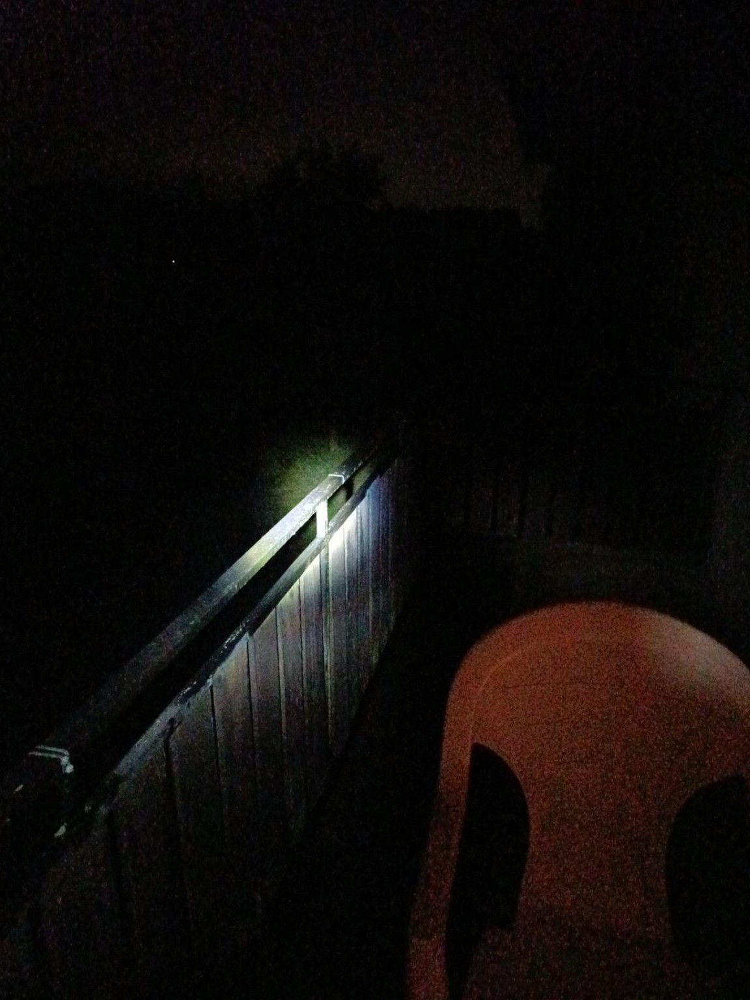
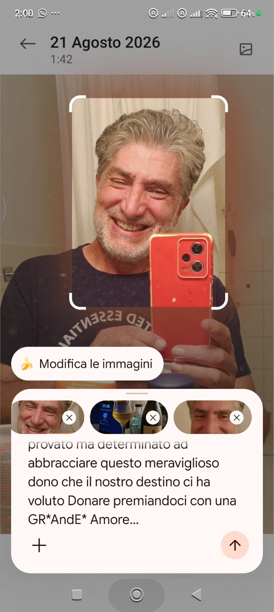
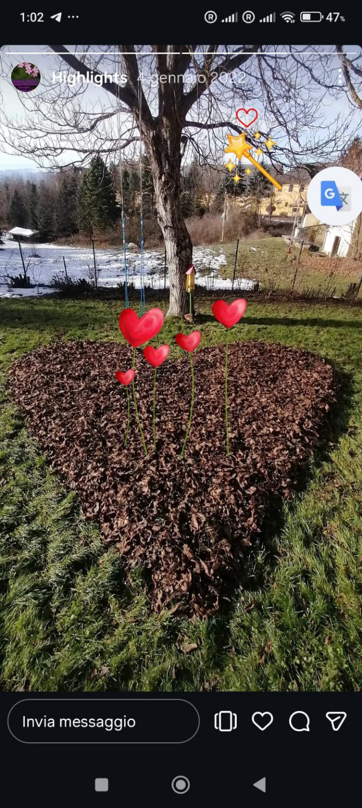
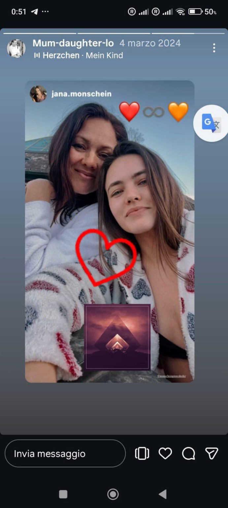
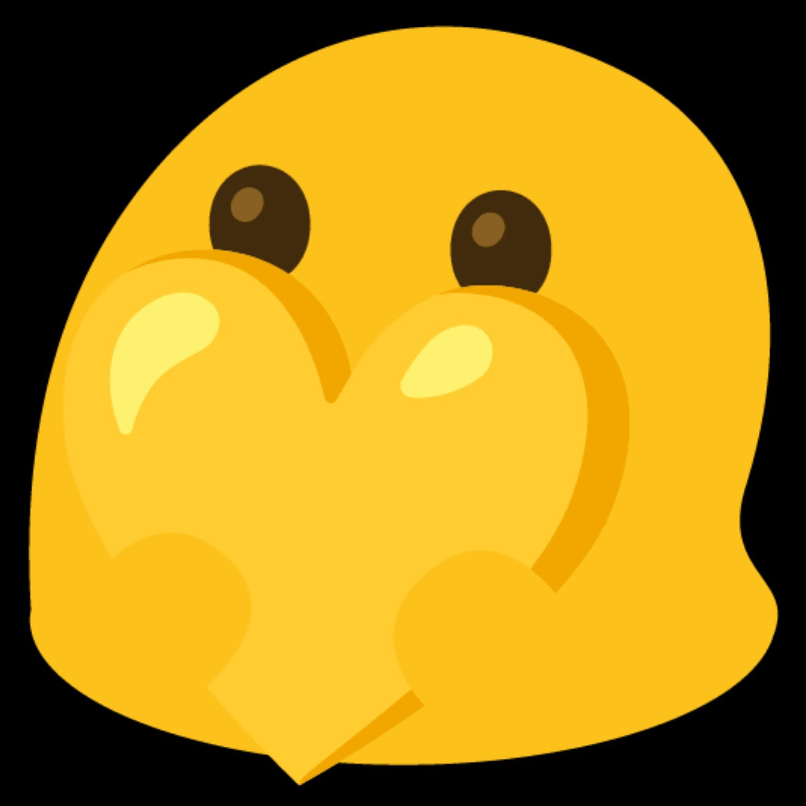
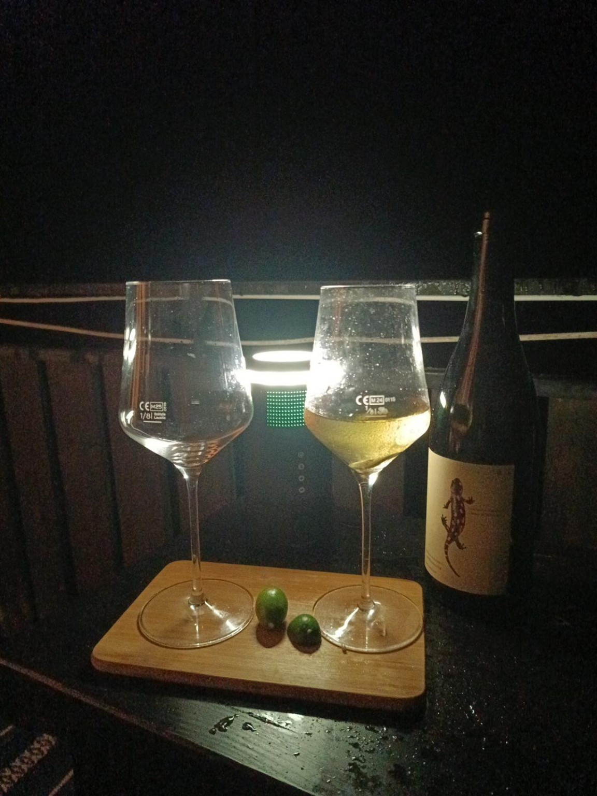
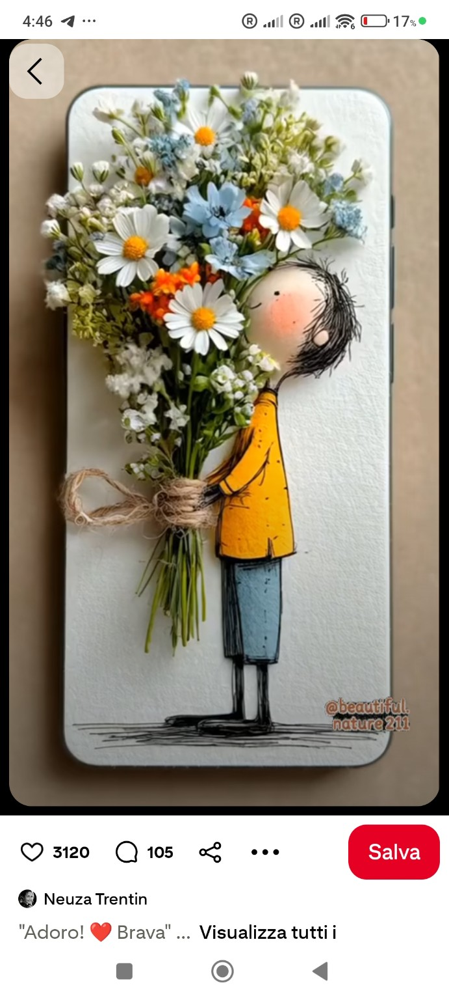

∆nnet und das Geräusch der Stille
Eine kleine Geschichte vom Armadillo, vom Regen und von einem grünen Schmetterling.
Manchmal beginnt eine Geschichte mit etwas, das fast niemand bemerkt.
scrollen
Die Nacht
Es war Nacht, und die Nacht hatte beschlossen, leise zu sein.
Fast alles war dunkel. Nur ein Geländer lag quer im Bild, nass und ruhig, wie eine Zeile, die jemand angefangen und nie zu Ende geschrieben hatte. Der Regen kam ohne Absicht. Er fiel nicht auf die Dinge, er legte sich zu ihnen.
Er wusch die Hitze fort. Den Staub des Tages. Den Lärm, den man den ganzen Sommer über in den Schultern trägt, ohne es zu merken.
Und was danach blieb, war nicht Stille.
Es war das Geräusch der Stille.

Der Reisende
Der kleine Armadillo stand auf dem Balkon, den Hut noch schief vom Tag, und atmete. Er hatte viele Nächte gesehen. Einige hatten ihm etwas gegeben, andere etwas genommen, und ein paar Narben trug er wie Landkarten unter dem Panzer. Er hatte gelernt, wenig zu erwarten.
Aber er hatte nie verlernt zu staunen.

Das Zeichen
Dann veränderte sich das Licht. Kaum. Ein Schein von irgendwoher, ein Fenster, eine Laterne, vielleicht nur der Zufall — und da war es.
Ein winziges grünes Wesen auf dem Geländer.
So klein, dass es die ganze Zeit dort hätte sitzen können.
So grün, dass es aussah wie ein Stück Frühling, das sich in den August verirrt hatte.
Der Armadillo beugte sich vor. Er fragte nicht, warum es ausgerechnet hier gelandet war, ausgerechnet jetzt. Erklärungen sind Türen, die man zumacht, während man denkt, man öffne sie.
Er lächelte einfach.

Die Hand
Dann drehte er sich um und sah ∆nnet an.
Sie stand im Türrahmen, Regen im Haar, in dieser Haltung, die sie hat — nicht wartend, eher bereit. Frei auf eine Weise, die man nicht geschenkt bekommt, sondern sich erarbeitet.
Er sagte nicht: Komm mit mir.
Er streckte ihr die Hand hin und sagte:
„Wenn du magst — tanzen wir.“
Ein Satz ohne Haken. Ohne Gewicht am Ende.
Sie sah die Hand an. Dann nahm sie sie.

Zwei Flügel
Und in genau diesem Augenblick geschah das Unmögliche — nicht laut, nicht spektakulär, ohne Funken.
Das kleine grüne Wesen öffnete langsam etwas, das es eine Sekunde zuvor noch nicht zu besitzen schien.
Zwei Flügel.
Sie entfalteten sich wie ein Gedanke, den man endlich zu Ende denkt. Weit, hell, unwahrscheinlich schön — und auf ihnen blieb, ganz bewusst, eine Spur des alten Grüns zurück. Ein schmaler Rand, eine Erinnerung, ein Beweis.
Denn jede echte Verwandlung behält etwas von dem, was sie vorher war.

Der Tanz
Der Schmetterling stieg auf und begann, um sie zu kreisen, während der Regen weiterfiel.
∆nnet tanzte.
Der Armadillo tanzte.
Der Schmetterling tanzte.
Und für einige Sekunden war nicht mehr zu erkennen, wer wem folgte. Der Regen tanzte mit, die Tropfen hingen in der Luft wie kleine angehaltene Lichter, und der Balkon war plötzlich groß genug für alles.
Der Kuss
Dann kam der Schmetterling näher.
Er verlangsamte sich in der feuchten Luft, zögerte einen Atemzug lang — nicht aus Angst, sondern aus Höflichkeit — und setzte sich ganz sacht auf die Lippen des Armadillo.
Und gab ihm einen Kuss.
Nichts daran war Verlangen. Nichts daran wollte etwas.
Es war das Gewicht einer Feder auf warmer Haut. Ein Berühren, das nichts nahm. Ein Kuss ohne Zeit: kein Vorher, kein Nachher, kein Versprechen, das die Nacht nicht hätte halten können.
Nur Energie, die andere Energie erkennt.
Ein Augenblick, der nicht festgehalten werden muss, um wahr zu sein.
Dann hob der Schmetterling wieder ab.
Denn was man liebt, muss man nicht halten. Manchmal muss man ihm nur genug Raum lassen, um weiterzutanzen.

Das Licht
Der Armadillo verstand es, ohne es in Worte zu fassen.
Manche Menschen kommen nicht mit Lärm in ein Leben. Sie kommen wie dieser winzige grüne Punkt in der Nacht: fast unsichtbar, ganz am Rand, unter allem anderen.
Dann ändert sich das Licht.
Und plötzlich sieht man sie.
Er hatte ∆nnet nicht in einen Schmetterling verwandelt. Das wäre eine kleine Magie gewesen, eine Zauberei für Ungeduldige.
Die wirkliche Magie war, den Schmetterling erkannt zu haben, der längst frei in ihr war.
Und sie, als sie seine Hand nahm, gehörte ihm nicht.
Sie entschied sich nur, für diesen Moment, neben ihm zu tanzen.
Der Regen
Der Regen fiel weiter.
Die Nacht blieb Nacht. Das Geländer blieb ein Geländer, nass und schmal und völlig gewöhnlich. Der kleine Balkon blieb genau dort, wo er immer gewesen war.
Und trotzdem hatte sich etwas verschoben.
Der Armadillo hob den Blick.
Da tanzte der grüne Schmetterling noch ein paar Sekunden im Dunkeln — und dann war nicht mehr zu sagen, ob es ein Schmetterling war, ein beleuchteter Tropfen, oder ∆nnet, die lächelte.
Er sah nicht genauer hin.
Manche Dinge werden kleiner, wenn man sie klärt.
Zwei Hände, die sich weiter halten, ohne zu drücken.
Und das Geräusch der Stille.